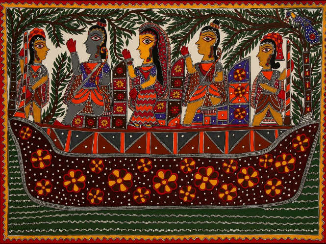

Madhubani Art
Origin and Tradition
Madhubani art, also known as Mithila painting, originated in the Mithila region of Bihar, India. This folk art form has been practiced for centuries and was traditionally done by women on the walls of their homes to mark special occasions like weddings, festivals, and births. The art was passed down through generations orally and visually. With time, it moved from walls to handmade paper, canvas, and fabric, gaining worldwide attention. The themes revolve around nature, mythology, and daily life, and it is known for its intricate patterns and vibrant natural colors.
Symbols
Madhubani art is deeply symbolic and filled with motifs that reflect the cultural values and religious beliefs of the Mithila region. Common symbols include:
- Sun and Moon: Represent celestial power and the passage of time.
- Fish: Symbolize fertility and prosperity.
- Peacocks: Signify beauty and love.
- Bamboo Trees: Indicate longevity and resilience.
- Lotus Flowers: Reflect purity and spiritual growth.
Styles
Madhubani art is classified into five distinctive styles, each associated with specific communities and their techniques:
- Bharni: Characterized by vibrant color-filling, usually depicting deities and rituals. Practiced traditionally by Brahmin women.
- Kachni: Line drawings with intricate hatching and patterns, mostly done by Kayastha women.
- Tantrik: Focuses on religious and spiritual themes, especially tantric symbolism and Hindu gods and goddesses.
- Godna: Inspired by tattoo patterns, this style is characterized by simple figures and monochromatic tones.
- Kohbar: Painted on wedding chamber walls, representing love, fertility, and prosperity through lotus, fish, and bamboo motifs.
Contributions
Madhubani art has played a significant role in preserving and promoting the cultural heritage of Bihar. It gained global attention when artists like Sita Devi and Ganga Devi showcased the art on international platforms. The art form also became a means of livelihood for many rural women in Bihar, empowering them economically and socially. Today, it is used in sustainable fashion, home décor, and public murals, including artwork on government buildings and railways.
Awards and Recognition
Several Madhubani artists have received national and international accolades for their work:
- Sita Devi: Honored with the Padma Shri for her contribution to Indian folk art.
- Ganga Devi: Her work was exhibited in international galleries; she received the National Award and Padma Shri.
- Bauwa Devi: One of the renowned Madhubani painters who preserved the Godna style; awarded for her artistry.